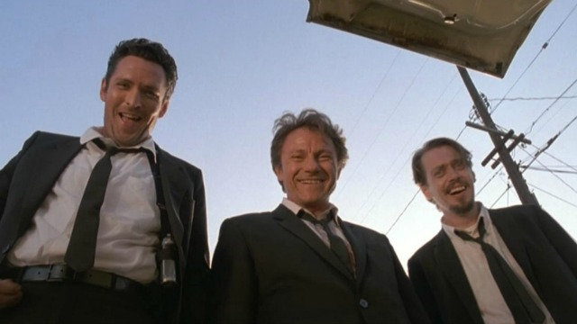
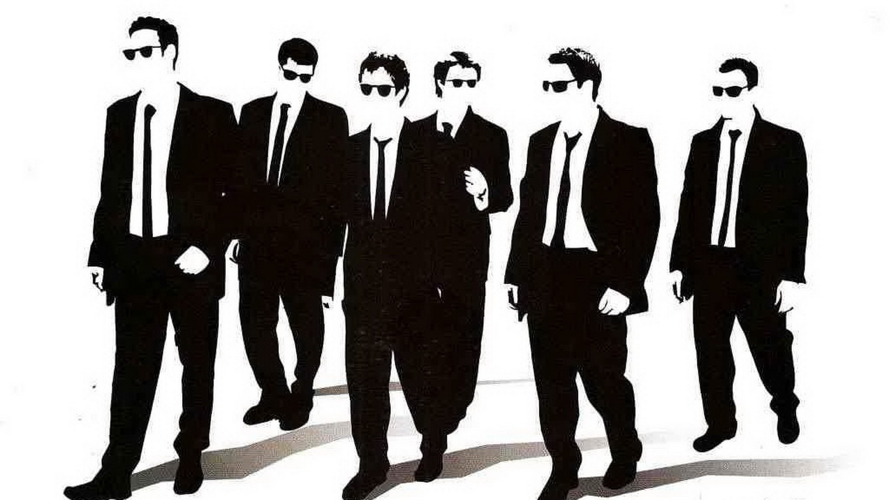

naslednja uganka

GOSPOD MODR GOSPOD RDEČ PA GODPOD SIV
pokaži uganko
So gospod Modr, gospod Rdeč in Gospod Siv.
Eden nosi modro kravato, drug sivo in tretji nosi rdečo kravato.
Gospod Modr reče gospodu v rdeči obleki
>>a veš, da imamo danes vsi drugačno kravato od našega priimka <<. Kakšno kravato ima gospod Modr?
tukaj ti bo povedalo če je pav ali narobe
odgovor
Gospod Modr je oblečen v sivo
Gospod Siv v rdečo in Gospoe Rdeč v modro
